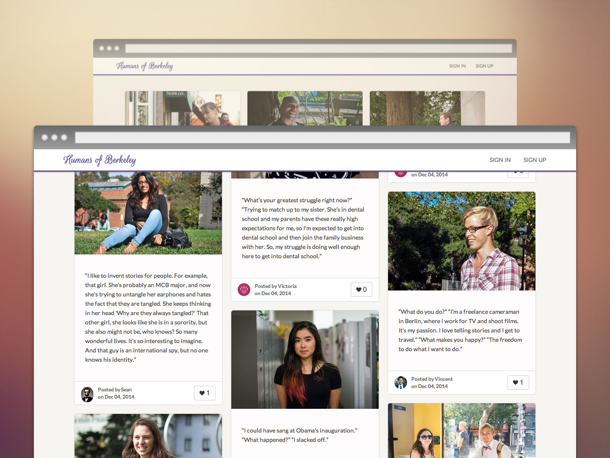
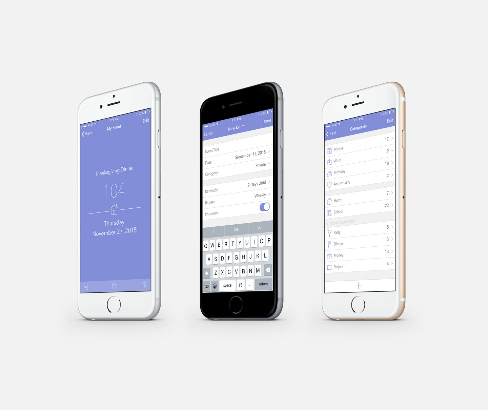

Humans of Berkeley is a photoblog built in Ruby on Rails featuring street portraits and interviews collected in Berkeley. Here is the fully functional code for the website.
The purpose of this app is to remind users of important days and events that they may have forgotten. Daybox keeps track of big events by counting down the days that matter to users. It also helps to get small things organized with reminders for recurring events such as monthly rent, paycheck, dues. Incorporated with Parse Data and Facebook API, users can easily grab event invitations from Facebook account, and sync data everywhere. Here is the code for the basic framework.
